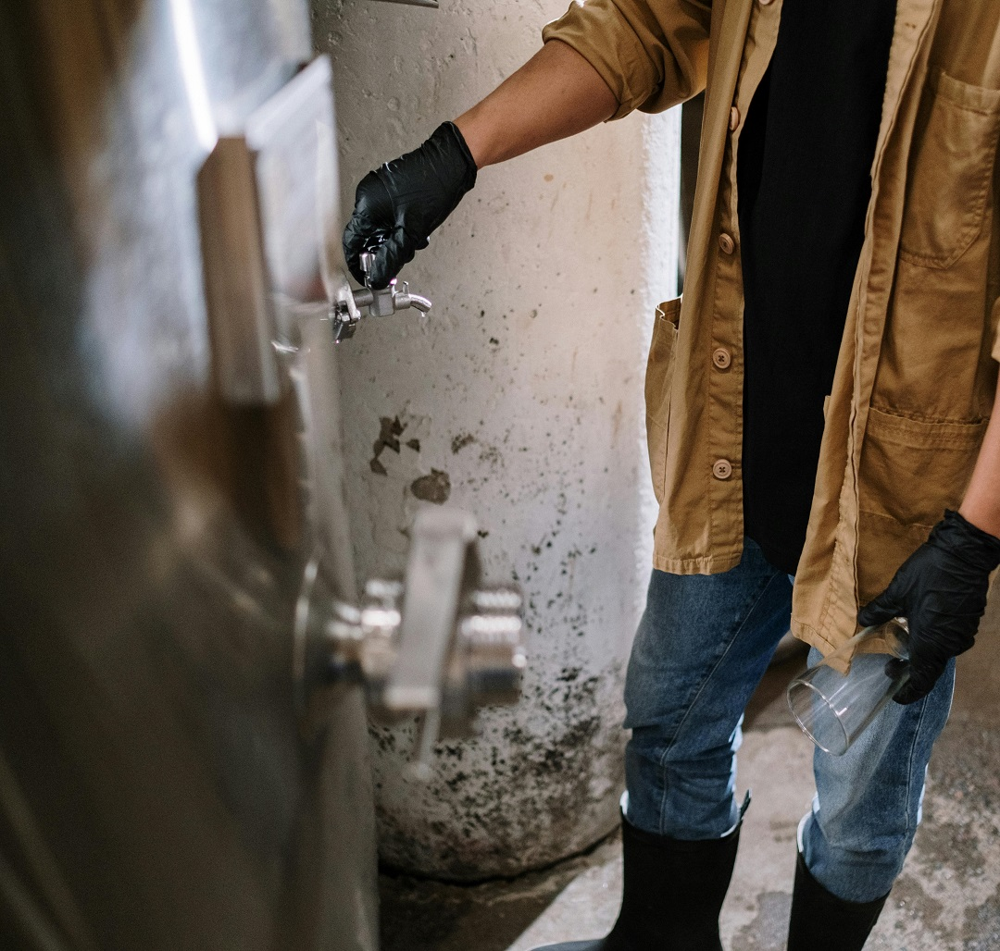
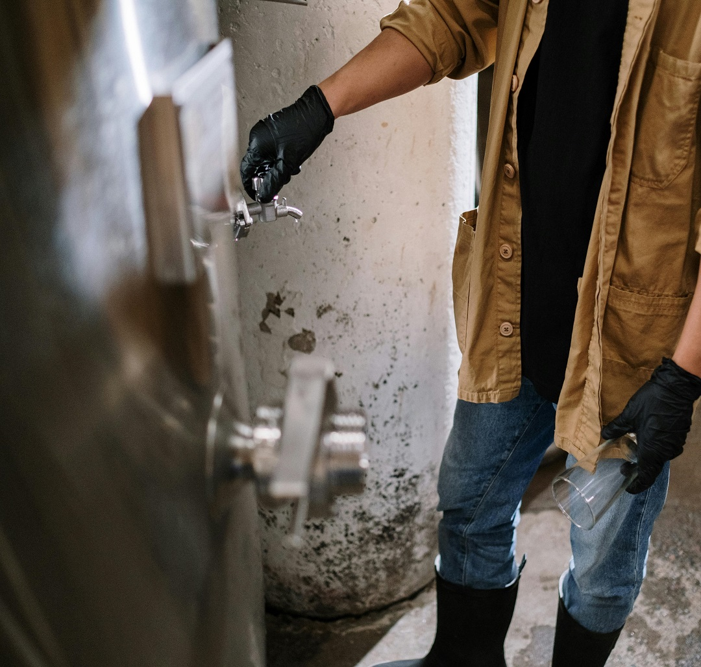
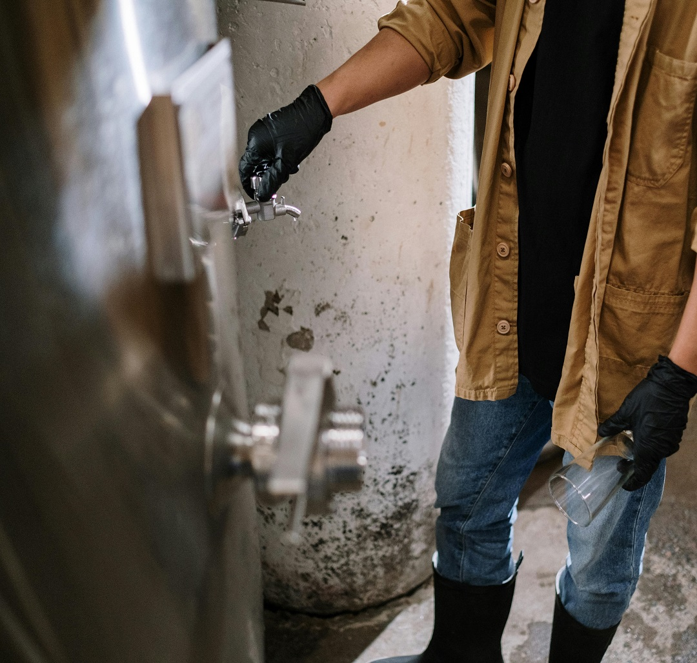
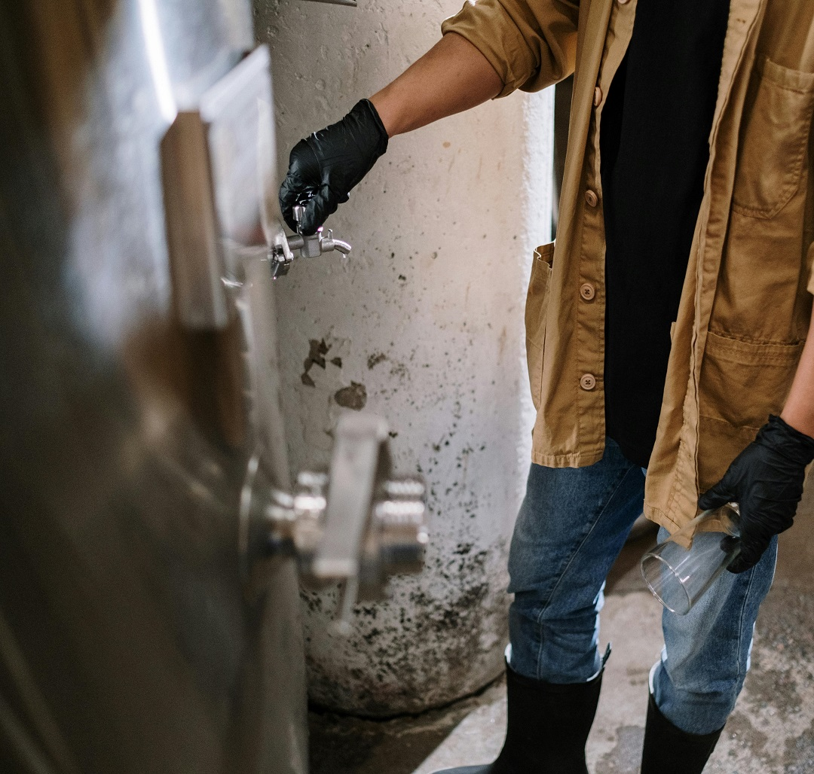

Instalação e distribuição de Chopp
 



Oferecemos o sistema de comodato de chopeiras, permitindo que bares, restaurantes e eventos usufruam dos melhores equipamentos sem precisar fazer um grande investimento.Com o comodato, você paga apenas pelo uso, e nossa equipe cuida da instalação, manutenção e todo o suporte necessário para garantir que o serviço de chopp seja sempre perfeito.
Além disso, nosso serviço de delivery de chopp é ideal para festas, casamentos, bares e eventos de todos os tamanhos. Trabalhamos com diversas opções de chopp, sempre priorizando a qualidade e a pontualidade na entrega, para que o seu evento seja um sucesso.
Oferecemos soluções práticas e de alta qualidade para bares, restaurantes e eventos com a instalação de chopeiras profissionais. Nosso sistema de comodato permite que você usufrua das melhores equipamentos sem precisar investir em compra, garantindo eficiência e qualidade no serviço de chopp. Trabalhamos com diferentes modelos para atender a todas as necessidades do seu negócio ou evento, sempre priorizando a satisfação de seus clientes e a otimização do serviço.
Além da instalação, realizamos delivery de chopp fresquinho para festas, casamentos, bares e eventos em geral. Garantimos um fornecimento pontual e a entrega de chopp de qualidade, com uma vasta gama de opções para agradar todos os gostos. Seja para eventos intimistas ou grandes celebrações, temos a solução ideal para proporcionar momentos de descontração e sabor aos nossos clientes.